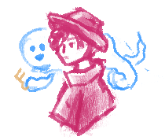
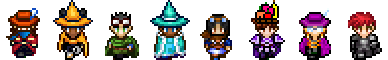

- Ari
A visual novel about regret and acceptance. - Ghost City
A 2D sidescrolling platformer of a detective in a city of light-fearing ghosts.
 - Forager:
A wireframe made using Adobe XD for high school volunteers. - ChemQuest:
A chemistry-inspired RPG game made using RPGmaker.
